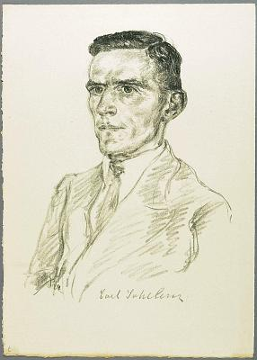

Le handball est bien plus qu'un simple sport collectif : c'est une discipline qui allie dynamisme, stratégie et cohésion d'équipe. Pratiqué dans le monde entier, il rassemble des millions de passionnés sur les terrains et dans les gradins. Mais derrière ce sport moderne se cache une histoire riche et méconnue, qui s'étend sur plusieurs siècles. De ses premières formes traditionnelles à son institutionnalisation et son rayonnement mondial, le handball a parcouru un long chemin pour devenir l'un des sports collectifs les plus populaires au monde. Voici une plongée dans l'histoire fascinante du handball.
Des racines anciennes et universelles : les premiers jeux de balle
Les origines du handball:
Les origines du handball remontent à des pratiques ludiques très anciennes, où la manipulation d'une balle à mains nues était au cœur du jeu. Ces activités n'étaient pas seulement des divertissements ; elles avaient souvent une signification plus profonde, liée à des rites culturels et religieux. Par exemple, dans de nombreuses civilisations anciennes, la balle symbolisait le soleil ou des divinités, et le jeu devenait ainsi une forme de communication avec les dieux.
Les jeux de balle et leurs significations symboliques:
Dans l'Antiquité, les jeux de balle étaient souvent bien plus que de simples passe-temps. Ils étaient intégrés dans des cérémonies religieuses et des rituels qui visaient à honorer les dieux ou à symboliser des concepts cosmiques. Par exemple, dans de nombreuses cultures, la balle représentait le soleil, et le lancer ou le frapper pouvait symboliser le mouvement du soleil à travers le ciel. Ces jeux participaient ainsi à des mythes et des légendes locales, renforçant la cohésion sociale et la transmission des traditions.
Exemples de jeux de balle dans les civilisations anciennes :
Grèce antique :
Le "harpaston" était un jeu populaire où les joueurs devaient lancer une balle au-delà de la ligne de but adverse. Ce jeu, très physique et compétitif, était souvent utilisé comme entraînement pour les soldats, leur permettant de développer force, agilité et esprit d'équipe. Le harpaston était également pratiqué lors de festivités et avait une dimension sociale importante.
Rome antique :
Inspirés par les Grecs, les Romains ont développé le "harpastum", une version plus compacte et dynamique du harpaston. Le harpastum impliquait des contacts physiques plus intenses et était également utilisé comme entraînement militaire. Les Romains appréciaient particulièrement ce jeu pour ses qualités de renforcement de l'endurance et des stratégies de combat.
Amérique centrale :
Les Mayas et les Aztèques jouaient à des jeux de balle, souvent dans des arènes spécialement construites pour ces activités. Ces jeux avaient des significations rituelles profondes, où la victoire ou la défaite pouvait avoir des implications spirituelles. La balle, souvent faite de caoutchouc, symbolisait des éléments naturels et cosmiques.
Une influence durable sur les jeux modernes:
Ces pratiques ancestrales de jeux de balle ont jeté les bases des sports modernes, dont le handball. Elles ont mis en avant l'importance de l'adresse manuelle, de la coordination et de l'endurance physique. De plus, elles ont souvent intégré des éléments de stratégie et de travail d'équipe, des aspects qui restent centraux dans les sports d'aujourd'hui. En somme, bien avant que le handball ne soit codifié comme un sport moderne, ses racines plongent profondément dans l'histoire humaine, illustrant comment le simple acte de jouer à la balle peut refléter des éléments culturels, spirituels et sociaux complexes. Ce riche héritage continue d'influencer la manière dont nous concevons et pratiquons les sports collectifs à ce jour.
Au fil des siècles : l'évolution et la diversification des jeux de balle
Une diversité de pratiques selon les cultures locales:
Au fil des siècles, les pratiques de jeux de balle ont évolué et se sont diversifiées en fonction des cultures locales. Chaque région, chaque civilisation a apporté sa propre touche, adaptant les jeux à ses traditions, son environnement et ses valeurs. Cette diversité a permis de créer une riche mosaïque de jeux de balle, chacun unique mais partageant des principes fondamentaux.
Le Moyen Âge en Europe : entre paysans et nobles :
Pendant le Moyen Âge, l'Europe a vu émerger une multitude de jeux de balle qui ont été pratiqués à la fois par les paysans et les nobles. Ces jeux étaient souvent organisés lors de fêtes et de célébrations, servant non seulement de divertissement mais aussi de moyen de renforcer les liens communautaires. Les règles variaient selon les régions, mais tous partageaient l'élément central de la manipulation de la balle avec les mains.
Le "jeu de paume" en France
En France, le "jeu de paume" est l'un des jeux de balle les plus notables de cette époque. Ce jeu, également connu sous le nom de "balle à main", consistait à frapper une balle avec la paume de la main. Joué initialement en extérieur, le jeu de paume a évolué pour se pratiquer en intérieur, souvent dans des salles spécifiquement conçues pour ce sport. Il est considéré comme un précurseur du tennis moderne. Le jeu de paume n'était pas seulement un loisir pour les nobles ; il était également pratiqué par les classes populaires, bien que sous des formes plus rudimentaires. Les tournois de jeu de paume étaient des événements sociaux importants, attirant de nombreux spectateurs et offrant des occasions de parier et de se divertir.
Les jeux similaires dans d'autres régions d'Europe :
En dehors de la France, d'autres régions d'Europe avaient également leurs propres versions de jeux de balle. En Allemagne, par exemple, des jeux comme le "Völkerball" (balle du peuple) et le "Schlagball" (balle frappée) étaient populaires. Ces jeux avaient des règles simples mais exigeaient une grande dextérité et une coordination parfaite entre les joueurs. En Angleterre, des jeux tels que le "real tennis" ou "court tennis" partageaient de nombreuses similarités avec le jeu de paume français. Ces jeux de raquette et de balle joués par la noblesse anglaise ont laissé un héritage durable qui perdure dans les sports modernes.
La base des sports modernes :
Ces jeux ancestraux, bien que différents dans leur forme et leur structure, posaient déjà les bases du handball et d'autres sports modernes. Ils valorisaient la manipulation de la balle avec les mains, l'importance de la stratégie, et la coordination d'équipe. Ils ont également favorisé le développement de compétences physiques et mentales, telles que la rapidité, la précision et la capacité à travailler en équipe. En résumé, les jeux de balle du Moyen Âge en Europe ont joué un rôle crucial dans l'évolution des activités ludiques vers des sports organisés. En se diversifiant et en s'adaptant aux cultures locales, ces pratiques ont enrichi le patrimoine sportif mondial et ont contribué à la naissance des sports modernes que nous connaissons aujourd'hui, comme le handball.
Le tournant du XIXe siècle : de la tradition au sport organisé :
C'est au XIXe siècle, dans un contexte marqué par l'essor des activités physiques organisées, que ces pratiques ont commencé à se transformer en véritables sports. Cette période, souvent appelée l'ère des « sports modernes », est caractérisée par l'introduction de disciplines codifiées et standardisées sous l'impulsion de réformateurs éducatifs et d'organisations sportives.
Le contexte européen et l'essor des sports modernes :
Au XIXe siècle, l'Europe connaît de profonds changements sociaux et économiques, avec l'industrialisation et l'urbanisation qui transforment la vie quotidienne. Dans ce contexte, les activités physiques et sportives deviennent des moyens essentiels pour améliorer la santé publique, renforcer la discipline et promouvoir la camaraderie. Des mouvements de réforme éducative voient le jour, prônant l'importance de l'éducation physique dans le développement des jeunes.
Friedrich Ludwig Jahn et la gymnastique en Allemagne

En Allemagne, une figure emblématique de cette période est Friedrich Ludwig Jahn, souvent considéré comme le "père de la gymnastique". Jahn fonde en 1811 le premier terrain de gymnastique en plein air à Berlin, appelé "Turnplatz". Il développe des exercices physiques visant à fortifier le corps et l'esprit, contribuant ainsi à la popularisation de l'éducation physique en Allemagne. Ses idées influencent grandement le développement des sports modernes dans le pays.
L'apparition des premiers jeux de balle organisés
C'est dans ce contexte de valorisation de l'éducation physique que des jeux de balle commencent à être organisés et codifiés. En 1897, Max Heiser, professeur d'éducation physique à Berlin, crée un jeu appelé "Torball" (ou "balle au but") qui deviendra par la suite une discipline handisprot, où deux équipes s'affrontent pour lancer une balle dans le but adverse. Ce jeu, bien qu'intéressant, restait encore limité dans son dynamisme et son universalité.
Karl Schelenz : le pionnier du handball moderne:
C'est Karl Schelenz qui marque un tournant décisif dans l'histoire du handball. En 1917, Schelenz, également professeur d'éducation physique en Allemagne, adapte le Torball pour en faire un jeu plus rapide et plus attractif. Il introduit des règles nouvelles, comme l'interdiction de courir avec la balle, et développe le concept de "handball" un jeu joué en intérieur qui se rapproche beaucoup du handball moderne que nous connaissons aujourd'hui. Schelenz s'inspire des idées de Friedrich Ludwig Jahn et des pratiques de gymnastique, tout en intégrant des éléments de jeux de balle traditionnels. Son approche met l'accent sur la vitesse, la précision et la stratégie, transformant le handball en un sport dynamique et captivant. Grâce à ses efforts, le handball gagne rapidement en popularité, d'abord en Allemagne, puis dans le reste de l'Europe.
La codification et la structuration du handball :
Avec l'adoption des règles de Karl Schelenz, le handball commence à se structurer comme un sport organisé. Des clubs se forment, des compétitions sont organisées, et des fédérations locales voient le jour. En 1925, la première rencontre internationale de handball masculin a lieu entre l'Allemagne et la Belgique, marquant le début de l'internationalisation de ce sport. Pour les femmes, la première rencontre internationale se déroule en 1930 entre l'Allemagne et l'Autriche. Le tournant du XIXe siècle marque donc une étape cruciale dans l'évolution du handball, passant de pratiques ludiques et locales à un sport codifié et organisé. Cette période voit l'émergence de figures pionnières comme Friedrich Ludwig Jahn et Karl Schelenz, qui, par leur vision et leur détermination, ont jeté les bases du handball moderne. Leurs contributions ont non seulement transformé ce jeu en un sport reconnu, mais ont également influencé d'autres disciplines sportives, soulignant l'importance de l'éducation physique et de l'activité sportive dans la société.
Le handball à onze fait sa première apparition aux Jeux Olympiques de Berlin en 1936. Cette édition est historique car elle marque la première fois que le handball est inclus dans le programme des Jeux Olympiques1. Le tournoi se déroule en plein air sur gazon et réunit six équipes masculines : l'Allemagne, l'Autriche, la Suisse, la Hongrie, les États-Unis et la Roumanie. L'Allemagne domine le tournoi et remporte la médaille d'or en battant l'Autriche en finale avec un score de 10-6. L'Autriche obtient la médaille d'argent, tandis que la Suisse se classe troisième1. Cette victoire de l'Allemagne souligne l'importance croissante du handball sur la scène internationale et contribue à populariser ce sport dans le monde entier. Le tournoi est marqué par des performances impressionnantes, notamment celles de Karl Kreutzberg et Arthur Knautz, qui sont parmi les joueurs les plus en vue de l'équipe allemande. Leur succès inspire de nombreux jeunes à prendre le handball au sérieux et à s'entraîner pour atteindre des niveaux similaires. En résumé, les Jeux Olympiques de Berlin de 1936 sont une étape importante dans l'histoire du handball, marquant son entrée officielle dans le monde des sports olympiques et ouvrant la voie à son développement et à sa reconnaissance mondiale.
Les années 1940 et 1950 : Consolidation et renforcement
Le contexte post-Seconde Guerre mondiale
Les impacts de la guerre sur le sport
La Seconde Guerre mondiale, de 1939 à 1945, a eu un impact dévastateur sur toutes les sphères de la vie, y ompris les activités sportives. Pendant cette période, de nombreuses compétitions sportives ont été suspendues, des infrastructures détruites, et les athlètes mobilisés pour le service militaire. Le handball, comme beaucoup d'autres sports, a été durement touché par cette interruption. Les clubs ont cessé leurs activités, et les tournois internationaux ont été annulés, créant une pause dans l'élan pris avant la guerre.
La relance du sport après la guerre
À la fin de la guerre, l'Europe était en ruines, mais il y avait un fort désir de revenir à la normalité, de reconstruire et de retrouver les plaisirs de la vie, y compris le sport. Le handball, qui avait commencé à gagner en popularité avant la guerre, a bénéficié de cette volonté de relance. Les compétitions ont repris, les clubs se sont reformés, et les athlètes sont revenus sur les terrains.
La réorganisation des compétitions et des clubs
L'un des aspects clés de cette période de relance a été la réorganisation des compétitions et des clubs. Les fédérations nationales ont joué un rôle crucial dans la reconstruction du sport, en organisant des championnats locaux et en rétablissant les liens avec les clubs. Les compétitions nationales sont devenues le pilier du développement du handball, permettant aux joueurs de retrouver un niveau de compétition et de s'entraîner régulièrement.
Les Championnats du Monde et autres compétitions internationales
Les Championnats du Monde, suspendus pendant la guerre, ont été réintroduits en 1954 avec un format à sept joueurs, plus dynamique et attractif. Le tournoi de 1954, organisé en Suède, a été un succès retentissant et a contribué à renforcer l'attrait du handball. La reprise de ces compétitions internationales a permis aux meilleures équipes du monde de s'affronter et a offert une vitrine mondiale pour le sport.
Le rôle des clubs et des ligues nationales
Au niveau local, les clubs de handball ont été des acteurs clés de cette période de reconstruction. Ils ont fourni des structures d'entraînement pour les joueurs, organisé des compétitions régionales et créé des liens communautaires forts autour du sport. Les ligues nationales se sont consolidées, offrant un cadre compétitif régulier et structuré pour les clubs.
La popularité croissante du handball féminin :
Les années d'après-guerre ont également vu une montée en puissance du handball féminin. Des fédérations nationales ont commencé à organiser des compétitions féminines, et les équipes de femmes ont pris de l'importance. Le premier Championnat du Monde féminin en 1957 en Yougoslavie a marqué une étape significative, démontrant l'engagement croissant pour le développement du sport chez les femmes.
Les défis et opportunités de l'époque :
La période post-Seconde Guerre mondiale a été marquée par de nombreux défis, notamment la reconstruction des infrastructures sportives, la réorganisation des compétitions et la mobilisation des ressources pour soutenir le développement du handball. Cependant, elle a également offert des opportunités uniques pour repenser et revitaliser le sport. L'engagement des fédérations nationales et de la IHF a été crucial pour transformer ces défis en succès durables.
En résumé, le contexte post-Seconde Guerre mondiale a été une période de renouveau et de consolidation pour le handball. Le sport a su se relever des ravages de la guerre, grâce à la détermination des athlètes, des clubs et des fédérations, et a pu se développer pour devenir une discipline reconnue et appréciée à l'échelle mondiale.
La création de la Fédération Internationale de Handball (IHF) en 1946 :
Contexte de la création
En 1946, l'Europe se remet progressivement des ravages de la Seconde Guerre mondiale. C'est dans ce contexte de reconstruction et de renouvellement que la Fédération Internationale de Handball (IHF) voit le jour. La création de l'IHF à Copenhague marque un tournant décisif dans l'histoire du handball, permettant de structurer et d'unifier le sport à une échelle mondiale.
Les objectifs de l'IHF :
L'IHF est fondée avec plusieurs objectifs clés :
1. Standardiser les règles du handball :
Avant la création de l'IHF, les règles du handball variaient d'un pays à l'autre, rendant les compétitions internationales difficiles. La standardisation des règles permet de garantir une pratique cohérente et équitable du sport.
2. Superviser les compétitions internationales :
L'IHF prend en charge l'organisation des grands tournois internationaux, notamment les Championnats du Monde. Cette supervision assure le respect des règles et des standards internationaux.
3. Encourager la formation de fédérations nationales :
L'IHF travaille activement à promouvoir le handball dans de nouveaux pays, aidant à la création de fédérations nationales et au développement du sport à tous les niveaux.
4. Promouvoir le handball à l'échelle mondiale :
L'un des principaux objectifs de l'IHF est de populariser le handball et de le rendre accessible à un public mondial. Cela inclut des efforts pour augmenter la participation, améliorer les infrastructures et soutenir les programmes de formation.
Les premiers pas de l'IHF :
Immédiatement après sa création, l'IHF entreprend plusieurs initiatives pour atteindre ses objectifs. L'une des premières actions est de réintroduire les Championnats du Monde, suspendus pendant la guerre. Le premier Championnat du Monde de handball à sept sous l'égide de l'IHF se tient en 1954 en Suède, marquant le début d'une nouvelle ère pour le sport.
La standardisation des règles :
La standardisation des règles est l'une des premières missions de l'IHF. En 1947, l'IHF publie un ensemble de règles officielles pour le handball à sept joueurs, ce qui facilite l'organisation de compétitions internationales cohérentes et justes. Ces règles couvrent tous les aspects du jeu, y compris les dimensions du terrain, le nombre de joueurs, la durée des matchs et les infractions.
La promotion internationale :
L'IHF ne se contente pas de structurer le handball en Europe ; elle cherche également à étendre le sport au-delà du continent. Dans les années qui suivent sa création, l'IHF soutient la formation de fédérations nationales en Asie, en Afrique et en Amérique. Ces efforts sont couronnés de succès, avec une augmentation rapide du nombre de pays membres de l'IHF et de la popularité du handball dans le monde entier.
Organisation des grands tournois :
En plus des Championnats du Monde, l'IHF organise et supervise de nombreuses autres compétitions internationales, telles que les Championnats du Monde juniors et les tournois continentaux. Ces événements sont essentiels pour le développement du talent et la promotion du handball à tous les niveaux.
L'importance des fédérations nationales :
Les fédérations nationales jouent un rôle crucial dans le développement du handball. Elles sont responsables de l'organisation des compétitions locales, de la formation des joueurs et des entraîneurs, et de la promotion du sport dans leurs pays respectifs. L'IHF travaille en étroite collaboration avec ces fédérations pour s'assurer que le handball est pratiqué de manière cohérente et professionnelle partout dans le monde.
Les défis et les succès :
La création de l'IHF n'a pas été sans défis. La reconstruction après la guerre, les différences culturelles et les ressources limitées ont nécessité des efforts considérables. Cependant, grâce à la détermination et à la vision des fondateurs de l'IHF, ces défis ont été surmontés, et le handball est devenu l'un des sports collectifs les plus populaires au monde.
En conclusion, la création de la Fédération Internationale de Handball en 1946 a été un moment clé dans l'histoire du sport. En standardisant les règles, en supervisant les compétitions internationales et en encourageant la formation de fédérations nationales, l'IHF a jeté les bases du handball moderne et a contribué à son développement et à sa popularité mondiale. Le travail de l'IHF continue d'être crucial pour le futur du handball, soutenant sa croissance et son expansion à travers les générations.
La réintroduction des Championnats du Monde :
Contexte de la reprise
Après la Seconde Guerre mondiale, le monde du sport s'efforce de se reconstruire et de retrouver une normalité. Le handball, qui avait été interrompu pendant la guerre, voit une opportunité de relancer ses grandes compétitions. La reprise des Championnats du Monde de handball en 1954 marque une étape cruciale dans cette relance. Ce tournoi, organisé en Suède, se concentre sur le format à sept joueurs, qui gagne rapidement en popularité en raison de son dynamisme et de sa rapidité.
Le choix du format à sept joueurs :
Avant la guerre, le handball était principalement joué en format à onze joueurs, souvent sur des terrains en plein air. Cependant, le format à sept joueurs, joué en intérieur, présente plusieurs avantages. Il offre un jeu plus rapide, plus stratégique et plus spectaculaire, ce qui attire un plus grand nombre de spectateurs. Le choix de ce format pour les Championnats du Monde de 1954 reflète une volonté de moderniser et de dynamiser le sport.
Organisation et succès du tournoi de 1954 :
Le Championnat du Monde de 1954 en Suède est un succès retentissant. Huit équipes nationales participent au tournoi, y compris les grandes nations du handball de l'époque comme la Suède, l'Allemagne et le Danemark. Les matchs attirent une attention considérable, tant sur place que dans les médias, et contribuent à augmenter la popularité du handball.
La finale voit s'affronter la Suède et l'Allemagne de l'Ouest, avec la Suède remportant la victoire devant un public enthousiaste. Ce succès renforce l'attrait du format à sept joueurs et établit une nouvelle norme pour les compétitions internationales. La qualité du jeu, l'organisation impeccable et l'engouement des spectateurs démontrent le potentiel du handball pour devenir un sport majeur sur la scène mondiale.
Impact sur la scène internationale :
Le succès du Championnat du Monde de 1954 a des répercussions importantes pour le handball. Il établit le format à sept joueurs comme le standard pour les compétitions internationales, influençant les règles du jeu et la structure des futurs tournois. De plus, il encourage la formation de fédérations nationales dans de nouveaux pays, contribuant à l'expansion mondiale du sport.
Les Championnats du Monde suivants bénéficient également de l'élan créé par le tournoi de 1954. L'intérêt pour le handball augmente, et les tournois attirent de plus en plus de participants et de spectateurs. Les équipes nationales investissent davantage dans la formation et le développement de leurs joueurs, élevant ainsi le niveau de compétition.
Le rôle de la Fédération Internationale de Handball (IHF) :
La Fédération Internationale de Handball (IHF) joue un rôle crucial dans la réussite des Championnats du Monde. En standardisant les règles et en organisant les tournois, l'IHF assure la cohérence et l'intégrité des compétitions. Son rôle de supervision permet de garantir que les matchs se déroulent dans des conditions équitables et professionnelles, contribuant ainsi à la crédibilité et à la réputation du sport.
Le handball dans les années 1950 et au-delà :
La réintroduction des Championnats du Monde de handball en 1954 ouvre une nouvelle ère pour le sport. Le handball continue de se développer et de gagner en popularité, non seulement en Europe mais aussi dans d'autres parties du monde. Les compétitions internationales se multiplient, offrant aux équipes et aux joueurs de nouvelles opportunités de se mesurer et de briller sur la scène mondiale.
En conclusion, la réintroduction des Championnats du Monde en 1954 marque un tournant décisif dans l'histoire du handball. Le choix du format à sept joueurs, le succès organisationnel et médiatique du tournoi, ainsi que l'impact durable sur le développement du sport, font de cet événement un jalon essentiel dans l'ascension du handball en tant que sport international de premier plan.
La réintroduction des Championnats du Monde
Le contexte de la reprise
Après la Seconde Guerre mondiale, le monde se reconstruit, et le sport joue un rôle crucial dans cette renaissance. La reprise des Championnats du Monde de handball en 1954 est une étape clé dans cette relance. L'enthousiasme pour le sport est palpable, et la nécessité de réunir les nations autour de compétitions pacifiques est plus importante que jamais. La Fédération Internationale de Handball (IHF), créée en 1946, s'active pour relancer ces championnats et renforcer l'attrait du handball à l'échelle mondiale.
Le choix du format à sept joueurs
Avant la guerre, le handball était principalement joué en format à onze joueurs sur des terrains en plein air, similaires à ceux utilisés pour le football. Cependant, le format à sept joueurs, pratiqué en intérieur, commence à gagner en popularité en raison de sa rapidité et de son dynamisme. Ce format plus compact et plus intense offre un jeu plus spectaculaire, attirant un plus grand nombre de spectateurs. Le choix de ce format pour les Championnats du Monde de 1954 en Suède est donc stratégique, visant à moderniser et populariser le sport.
Organisation et succès du tournoi de 1954
Le Championnat du Monde de 1954 se tient en Suède, un pays où le handball est déjà bien implanté. Ce choix de lieu est symbolique, car la Suède est l'une des nations leaders en matière de handball à cette époque. Le tournoi réunit huit équipes nationales, dont certaines des meilleures équipes de l'époque : la Suède, l'Allemagne de l'Ouest, le Danemark, et d'autres.
Le tournoi est un succès retentissant, avec des matchs qui attirent un public nombreux et une couverture médiatique importante. La finale, qui voit s'affronter la Suède et l'Allemagne de l'Ouest, se joue devant une foule enthousiaste. La Suède remporte la victoire, marquant ainsi une étape importante pour le handball.
Impact sur la popularité du handball
- Format à sept joueurs : Le format à sept joueurs, grâce à sa rapidité et à son intensité, séduit rapidement un public large.
- Matchs spectaculaires : Les matchs sont plus courts et plus dynamiques, rendant le sport plus attrayant pour les spectateurs et les diffuseurs.
- Développement international : Cette popularité croissante encourage de nombreux pays à développer leurs propres équipes nationales et à organiser des compétitions locales et régionales.
L'importance des médias et des sponsors
Les médias jouent un rôle crucial dans la promotion du handball à cette époque. La couverture des Championnats du Monde de 1954 par les journaux, la radio et, de plus en plus, la télévision, aide à populariser le sport. Les images des matchs et les reportages sur les joueurs attirent l'attention du public et des sponsors. Ces derniers voient dans le handball une opportunité de promotion et commencent à investir dans les équipes et les compétitions, contribuant ainsi au développement du sport.
Évolution des Championnats du Monde
Après le succès de 1954, les Championnats du Monde deviennent un rendez-vous régulier et incontournable pour le handball international. La compétition se tient tous les quatre ans jusqu'en 1993, puis tous les deux ans par la suite, permettant aux meilleures équipes du monde de s'affronter régulièrement. Chaque édition contribue à élever le niveau de jeu et à élargir la base de fans du handball.
Expansion internationale
Le succès des Championnats du Monde de 1954 stimule l'expansion internationale du handball. Des fédérations nationales se forment dans de nombreux pays, et le sport gagne en popularité en dehors de l'Europe. Des pays comme l'Égypte, la Corée du Sud et le Brésil commencent à émerger comme de nouveaux centres de pouvoir du handball, participant activement aux compétitions internationales et organisant leurs propres tournois.
Innovation et amélioration des règles
La Fédération Internationale de Handball (IHF) continue d'innover et d'améliorer les règles du jeu pour maintenir l'intérêt et l'équité des compétitions. Des ajustements sont régulièrement faits pour améliorer la fluidité du jeu, réduire les arrêts de match et garantir la sécurité des joueurs. Ces améliorations contribuent à rendre le handball encore plus excitant et accessible.
L'importance des pays scandinaves
Rôle majeur dans le développement du handball
Les pays scandinaves, en particulier la Suède et le Danemark, jouent un rôle central dans le développement du handball durant les années 1940 et 1950. Ces nations investissent massivement dans les infrastructures sportives, l'organisation de compétitions et la formation des joueurs, contribuant ainsi à l'essor du handball comme sport de premier plan.
Infrastructures sportives et compétitions de haut niveau
Les investissements dans les infrastructures sportives permettent aux pays scandinaves de construire des installations de qualité pour l'entraînement et la compétition. Ces efforts incluent :
- La construction de gymnases modernes
- La mise en place de terrains de handball en intérieur
- L'amélioration des équipements pour les athlètes
Ces infrastructures de pointe offrent aux joueurs des conditions optimales pour développer leurs compétences et se préparer pour les compétitions internationales.
Les équipes nationales scandinaves
Les équipes nationales scandinaves, notamment celles de la Suède et du Danemark, deviennent rapidement des puissances du handball. Ces équipes bénéficient de :
- Programmes de formation rigoureux
- Expertise de leurs entraîneurs
- Environnements compétitifs et de soutien
Ces facteurs les rendent très compétitives sur la scène internationale. Elles remportent de nombreux titres et leur succès inspire d'autres pays à investir dans le développement du handball.
Contribution à la popularisation du sport
La popularité du handball en Suède et au Danemark aide à promouvoir le sport dans d'autres régions. Les performances des équipes scandinaves lors des compétitions internationales attirent l'attention des médias et des fans, augmentant ainsi la visibilité du handball. Les matchs sont largement diffusés et suivis, ce qui contribue à renforcer l'intérêt pour le sport.
La popularisation du handball féminin
Les débuts de la popularisation (années 1940 et 1950)
Les années 1940 et 1950 voient le début de la popularisation du handball féminin. Des fédérations nationales commencent à organiser des compétitions féminines, et les équipes de femmes se multiplient. Cette période marque une étape importante pour le développement du handball féminin, qui commence à attirer l'attention et à se structurer de manière plus formelle.
La première édition du Championnat du Monde féminin (1957)
En 1957, la première édition du Championnat du Monde féminin a lieu en Yougoslavie. Cet événement est crucial pour l'histoire du handball féminin, car il offre une plateforme internationale aux équipes féminines pour se mesurer les unes aux autres. Le tournoi contribue à accroître la visibilité du handball féminin et à inspirer de nouvelles générations de joueuses.
Le rôle des médias et des sponsors
Pendant cette période, les médias commencent à s'intéresser de plus près au handball, offrant une couverture accrue des matchs et des tournois. Cela attire l'attention des sponsors, qui voient dans le handball une opportunité de promouvoir leurs marques. Le soutien des médias et des sponsors est crucial pour le développement du sport, permettant l'organisation d'événements de plus grande envergure et offrant de meilleures conditions pour les joueurs.
Les défis et les perspectives d'avenir
Bien que le handball se développe rapidement, il fait face à plusieurs défis :
- Concurrence avec d'autres sports établis : Le handball doit rivaliser avec des sports ayant déjà une base de fans solide et des infrastructures bien développées.
- Nécessité de développer des infrastructures adaptées : Pour soutenir la croissance du sport, il est essentiel de disposer de gymnases modernes et d'installations de qualité.
- Promotion et soutien : Les initiatives pour promouvoir le handball et attirer de nouveaux joueurs sont cruciales pour son avenir.
Cependant, les perspectives d'avenir sont prometteuses. La IHF et les fédérations nationales travaillent ensemble pour promouvoir le handball et pour s'assurer qu'il continue de croître à l'échelle mondiale.
En résumé
Les années 1940 et 1950 sont une période de consolidation et de renforcement pour le handball. La création de la IHF, la reprise des Championnats du Monde, et le développement des clubs et des compétitions nationales posent les bases solides sur lesquelles le handball moderne est construit. Ces décennies sont marquées par une expansion continue du sport, qui s'affirme comme un acteur majeur sur la scène internationale.
Le rôle des médias et des sponsors
Couverture médiatique accrue
Les médias jouent un rôle crucial dans la promotion du handball en augmentant sa visibilité et en attirant un public plus large. Grâce à la couverture médiatique, les matchs de handball sont diffusés à la radio, dans les journaux et à la télévision, permettant à un nombre croissant de personnes de suivre les compétitions. Cette exposition médiatique contribue à populariser le sport et à attirer de nouveaux fans.
Attention des sponsors
Avec l'augmentation de la couverture médiatique, les sponsors commencent à voir le potentiel commercial du handball. Ils investissent dans les équipes, les compétitions et les joueurs, apportant des ressources financières essentielles pour le développement du sport. Les sponsors jouent un rôle clé en fournissant des équipements, en finançant les déplacements et en améliorant les infrastructures sportives.
Impact sur le développement du sport
- Organisation d'événements de grande envergure : Le soutien des médias et des sponsors permet d'organiser des événements tels que des championnats nationaux et internationaux, attirant un public plus large et offrant de meilleures conditions pour les joueurs.
- Élévation du niveau de compétition : Les ressources financières des sponsors contribuent à améliorer les conditions d'entraînement et à attirer des talents, élevant ainsi le niveau de jeu.
- Développement de programmes de formation pour les jeunes : Les investissements permettent de créer des programmes de formation pour les jeunes, assurant la relève des futures générations de joueurs.
Collaboration entre médias, sponsors et fédérations
La collaboration entre les médias, les sponsors et les fédérations de handball est essentielle pour le développement harmonieux du sport. Les médias offrent une plateforme pour promouvoir le handball, les sponsors fournissent les ressources nécessaires, et les fédérations organisent et supervisent les compétitions. Ensemble, ces acteurs contribuent à la croissance et à la professionnalisation du handball.
Défis et perspectives d'avenir
Malgré les progrès réalisés, le handball doit encore relever plusieurs défis pour continuer à se développer :
- Concurrence avec d'autres sports populaires : Le handball doit rivaliser avec des sports ayant déjà une base de fans solide et des infrastructures bien développées.
- Attraction de nouveaux sponsors : Il est essentiel d'attirer de nouveaux sponsors pour assurer un financement durable et soutenir le développement du sport.
- Couverture médiatique constante : Maintenir une couverture médiatique régulière est crucial pour garder l'intérêt du public et attirer de nouveaux fans.
Cependant, avec une collaboration continue entre les médias, les sponsors et les fédérations, les perspectives d'avenir du handball restent prometteuses.
Les défis et les opportunités futures
Les défis à surmonter
- Concurrence avec d'autres sports populaires : Le handball doit rivaliser avec des sports bien établis comme le football, le basket-ball et le tennis, qui bénéficient d'une base de fans solide et de plus grandes infrastructures.
- Besoin de financement durable : Il est crucial de garantir un financement durable pour les clubs et les ligues afin de maintenir leur développement et leur compétitivité.
- Développement du sport dans les régions moins connues : Le handball doit s'étendre dans les régions où il est moins populaire pour augmenter sa base de pratiquants et attirer de nouveaux talents.
Les opportunités à saisir
Cependant, les opportunités pour le handball sont nombreuses :
- Augmenter la participation des jeunes : Les initiatives visant à promouvoir le handball auprès des jeunes sont essentielles pour assurer la relève et développer les talents de demain.
- Améliorer les infrastructures : Investir dans des infrastructures sportives modernes et accessibles est crucial pour soutenir la croissance du sport.
- Promouvoir l'égalité des sexes : Encourager la participation des femmes et garantir l'égalité des opportunités dans le handball contribue à la croissance globale du sport.
En résumé
Le handball a su s'imposer comme un sport international grâce à une solide structure organisationnelle, des compétitions de haut niveau et un engagement fort des fédérations et des clubs. Sa popularité croissante et son expansion mondiale témoignent de l'attrait universel de ce sport dynamique et engageant.
Les Jeux Olympiques de Munich (1972)
Le retour du handball aux Jeux Olympiques
Le handball fait son retour aux Jeux Olympiques en 1972 à Munich, cette fois sous le format à sept joueurs. Ce retour marque un moment charnière pour le sport, lui offrant une visibilité internationale accrue et solidifiant son statut en tant que sport olympique. La décision d'inclure à nouveau le handball dans les Jeux Olympiques découle du désir de moderniser et de diversifier le programme olympique, tout en reconnaissant la popularité croissante de ce sport à travers le monde.
Le tournoi masculin de 1972
Le tournoi masculin de handball de 1972 à Munich est mémorable et très compétitif. Douze équipes nationales se qualifient pour participer, représentant une diversité géographique et offrant un niveau de compétition élevé. Les matchs sont disputés avec intensité et passion, captivant l'attention des spectateurs et des médias du monde entier.
- Roumanie
- Tchécoslovaquie
- Yougoslavie
- Allemagne de l'Est
- Allemagne de l'Ouest
- Danemark
- Suède
- Tunisie
- Espagne
- Norvège
- Japon
- États-Unis
La Roumanie remporte la médaille d'or, affichant une performance remarquable tout au long du tournoi. La Tchécoslovaquie décroche la médaille d'argent, tandis que la Yougoslavie obtient le bronze. Ces résultats mettent en lumière la domination des équipes européennes dans le handball à cette époque, mais aussi l'engagement des joueurs et des entraîneurs pour exceller sur la scène mondiale.
L'impact du retour du handball aux Jeux Olympiques
- Visibilité accrue : La présence du handball aux Jeux Olympiques de Munich permet au sport de gagner en visibilité à l'échelle mondiale, attirant de nouveaux fans et participants.
- Reconnaissance internationale : Être inclus dans le programme olympique confère au handball une reconnaissance officielle en tant que sport majeur, renforçant son statut et son prestige.
- Développement du sport : La visibilité et la reconnaissance internationales encouragent davantage de pays à investir dans le handball, à former des équipes nationales et à organiser des compétitions locales.
L'intégration du handball féminin aux Jeux Olympiques de 1976
L'intégration du handball féminin aux Jeux Olympiques de 1976 à Montréal est également un pas important vers l'égalité des sexes dans le sport. Cette inclusion marque une étape significative pour la reconnaissance et le développement du handball féminin à l'échelle mondiale. Les équipes féminines de plusieurs pays se préparent intensivement pour cette première apparition olympique, et la compétition est tout aussi intense et passionnante que celle des hommes.
L'intégration du handball féminin aux Jeux Olympiques de 1976
L'intégration du handball féminin aux Jeux Olympiques de 1976 à Montréal est également un pas important vers l'égalité des sexes dans le sport. Cette inclusion marque une étape significative pour la reconnaissance et le développement du handball féminin à l'échelle mondiale. Les équipes féminines de plusieurs pays se préparent intensivement pour cette première apparition olympique, et la compétition est tout aussi intense et passionnante que celle des hommes.
Résultats et impact du tournoi féminin de 1976
- Médaille d'or : L'Union soviétique remporte la médaille d'or.
- Médaille d'argent : La RDA (Allemagne de l'Est) décroche la médaille d'argent.
- Médaille de bronze : La Hongrie obtient la médaille de bronze.
Ces résultats mettent en avant la qualité et le talent des équipes féminines, et encouragent d'autres nations à développer leurs propres programmes de handball féminin.
- Égalité des sexes : La présence des femmes dans le programme olympique de handball renforce l'égalité des sexes et promeut la participation des femmes dans tous les sports.
- Développement global : L'inclusion du handball féminin aux Jeux Olympiques encourage les pays à investir dans le développement de leurs équipes féminines, à offrir des infrastructures et des programmes de formation adaptés.
- Inspirer les jeunes : Les performances des athlètes féminines olympiques inspirent de nombreuses jeunes filles à s'engager dans le handball et à poursuivre leurs rêves sportifs.
En résumé
Les Jeux Olympiques de Munich en 1972 et de Montréal en 1976 sont des étapes cruciales dans l'histoire du handball. Le retour du handball aux Jeux et l'intégration du handball féminin marquent des moments clés pour le sport, offrant une visibilité internationale accrue, une reconnaissance officielle et une promotion de l'égalité des sexes qui continuent à influencer le développement du handball aujourd'hui.
Les années 1980 et 1990 : Professionnalisation et compétitions majeures
Professionnalisation du handball
Durant les années 1980 et 1990, le handball connaît une professionnalisation accrue. Cette période voit la création de ligues professionnelles dans plusieurs pays, attirant des joueurs talentueux et améliorant la qualité et la compétitivité du jeu. Les clubs investissent dans les infrastructures et les programmes de formation, permettant aux joueurs de s'entraîner dans des conditions optimales et de se préparer pour des compétitions de haut niveau.
- Bundesliga (Allemagne) : Fondée en 1966 mais prenant de l'ampleur dans les années 1980, cette ligue devient l'une des plus compétitives et des plus prestigieuses, attirant de nombreux joueurs internationaux.
- Ligue Nationale de Handball (LNH) (France) : Créée en 1952 mais véritablement professionnalisée dans les années 1980, la LNH devient un pilier du handball européen. Les clubs français, tels que Montpellier Handball, commencent à se démarquer sur la scène internationale.
- Liga ASOBAL (Espagne) : La Liga ASOBAL, fondée en 1990, émerge rapidement comme une force majeure, avec des clubs tels que le FC Barcelone dominant la scène européenne. Cette ligue est reconnue pour son dynamisme et la qualité de ses matchs.
Domination européenne
L'Allemagne, la France, et les pays scandinaves continuent de dominer le paysage du handball. Leurs équipes nationales et leurs clubs remportent de nombreux titres, consolidant leur statut de puissances du handball. Les compétitions européennes, telles que la Ligue des Champions de l'EHF, deviennent des rendez-vous incontournables, offrant des matchs de haute qualité et attirant l'attention des fans et des médias.
- L'équipe d'Allemagne : Remporte plusieurs titres de champion d'Europe et du monde durant cette période, renforçant sa réputation de force dominante.
- L'équipe de France : Avec des joueurs emblématiques comme Jackson Richardson, la France s'impose progressivement comme une puissance mondiale, remportant des titres importants et se forgeant une réputation d'excellence.
- Les pays scandinaves : La Suède, le Danemark et la Norvège continuent de briller sur la scène internationale, avec des styles de jeu distinctifs et des programmes de formation de haut niveau.
Premier Championnat du Monde féminin (1993)
En 1993, le premier Championnat du Monde de handball féminin a lieu en Norvège. Cet événement marque une étape importante pour le développement du handball féminin, offrant une plateforme internationale aux équipes féminines pour se mesurer les unes aux autres. Le succès de ce championnat renforce l'infrastructure du sport pour les femmes, encourageant de nombreux pays à investir dans leurs programmes de handball féminin.
Premiers Championnats d'Europe (1994)
En 1994, les premiers Championnats d'Europe de handball sont organisés, ajoutant une nouvelle dimension aux compétitions internationales. Ces championnats, organisés tous les deux ans, permettent aux équipes européennes de s'affronter régulièrement, augmentant ainsi le niveau de jeu et l'intérêt pour le sport. Les Championnats d'Europe deviennent rapidement l'un des tournois les plus prestigieux du calendrier handballistique, attirant des millions de spectateurs.
Le tournoi de 1994 se déroule au Portugal, réunissant les meilleures équipes européennes et offrant des matchs de haute intensité. La Suède remporte le titre de champion d'Europe, renforçant sa position de leader du handball européen.
En résumé
Les années 1980 et 1990 sont une période de transformation pour le handball, marquée par la professionnalisation et l'émergence de compétitions majeures. La création de ligues professionnelles, la domination des équipes européennes, et l'organisation de nouveaux championnats contribuent à élever le niveau de jeu et à accroître la popularité du handball à travers le monde.
L'ère moderne : le handball globalisé
Aujourd'hui, le handball est un sport véritablement mondial, avec des compétitions de haut niveau telles que les Championnats du Monde, les Jeux Olympiques, et les ligues nationales comme la Bundesliga en Allemagne et la LNH en France. La technologie et les innovations en matière de formation ont transformé le sport, rendant les matchs plus rapides et plus excitants.
Compétitions de haut niveau
Les compétitions de handball d'aujourd'hui sont parmi les plus prestigieuses et les plus suivies dans le monde du sport. Parmi elles, on trouve :
- Championnat du Monde : Cet événement réunit les meilleures équipes nationales du monde entier pour un tournoi de haute intensité qui se déroule tous les deux ans. Les Championnats du Monde sont organisés par la Fédération Internationale de Handball (IHF) et offrent une plateforme mondiale pour les talents de handball.
- Jeux Olympiques : Le handball est un sport olympique depuis 1972 pour les hommes et 1976 pour les femmes. Les Jeux Olympiques permettent aux équipes nationales de concourir sur la plus grande scène sportive du monde, attirant des millions de spectateurs et de téléspectateurs.
- Bundesliga (Allemagne) : La Bundesliga est l'une des ligues nationales les plus compétitives et prestigieuses, attirant des joueurs de classe mondiale et offrant des matchs de haute intensité.
- Ligue Nationale de Handball (LNH) (France) : La LNH est une autre ligue nationale de premier plan, connue pour son niveau élevé de compétition et son rôle dans le développement de jeunes talents.
Innovations technologiques et formation
La technologie et les innovations en matière de formation ont joué un rôle crucial dans la transformation du handball moderne. Ces innovations comprennent :
- Analyse vidéo : Les équipes utilisent l'analyse vidéo pour étudier les matchs, évaluer les performances des joueurs et développer des stratégies de jeu plus efficaces.
- Technologie de suivi des performances : Les dispositifs de suivi des performances, tels que les GPS et les capteurs biométriques, permettent de mesurer avec précision les efforts des joueurs, aidant ainsi à optimiser l'entraînement et à prévenir les blessures.
- Entraînement par simulation : Les simulations et les technologies de réalité virtuelle sont utilisées pour créer des environnements d'entraînement immersifs, offrant aux joueurs des expériences de jeu réalistes et améliorant leur prise de décision sur le terrain.
Attraction des talents mondiaux
Les clubs de handball attirent des talents du monde entier, et les transferts internationaux sont courants. Cela permet aux ligues nationales et aux compétitions de clubs d'être extrêmement compétitives et de présenter un niveau de jeu élevé.
Les compétitions européennes, telles que la Ligue des Champions de l'EHF, sont particulièrement populaires et offrent des plateformes pour que les meilleurs clubs et joueurs puissent s'affronter. Ces tournois attirent des millions de spectateurs et génèrent des revenus importants grâce aux droits de diffusion et aux partenariats commerciaux.
Les clubs investissent également dans le développement des jeunes talents par le biais de leurs académies et programmes de formation, garantissant ainsi la relève et la pérennité du sport.
En résumé
En résumé, le handball a parcouru un long chemin depuis ses origines jusqu'à devenir un sport organisé et internationalement reconnu. Des premiers jeux informels aux compétitions de classe mondiale, le handball continue de captiver les fans avec son dynamisme, son esprit d'équipe et son engagement physique. Les innovations technologiques, l'attraction des talents mondiaux et les compétitions de haut niveau contribuent à faire du handball un sport passionnant et en constante évolution.
L'ère moderne : le beach handball globalisé
Le beach handball, une variante du handball traditionnel, a connu une croissance significative au cours des dernières décennies. Ce sport, pratiqué sur du sable, combine les éléments du handball avec l'atmosphère détendue et festive des plages, attirant ainsi un public diversifié et passionné.
Compétitions de haut niveau
Aujourd'hui, le beach handball est un sport globalisé avec des compétitions de haut niveau. Parmi les plus prestigieuses, on trouve :
- Championnat du Monde de Beach Handball : Organisé par la Fédération Internationale de Handball (IHF), cet événement biennal rassemble les meilleures équipes nationales du monde entier.
- Jeux Mondiaux : Le beach handball figure également au programme des Jeux Mondiaux, une compétition multisports qui met en avant des sports non olympiques.
- Championnats d'Europe de Beach Handball : Organisés par la Fédération Européenne de Handball (EHF), ces championnats sont très compétitifs et attirent les meilleures équipes du continent.
- World Beach Games : Cet événement international inclut le beach handball parmi ses disciplines et contribue à la promotion globale du sport.
Innovations et évolution
Le beach handball a bénéficié de nombreuses innovations qui ont transformé le sport et amélioré l'expérience des joueurs et des spectateurs. Parmi ces innovations, on trouve :
- Règles dynamiques : Le beach handball utilise des règles adaptées pour rendre le jeu plus rapide et plus excitant. Par exemple, les points pour les buts spectaculaires et les "spins" ajoutent une dimension ludique et spectaculaire au sport.
- Technologie de diffusion : Les avancées technologiques en matière de diffusion permettent de retransmettre les matchs en direct à un public mondial, augmentant ainsi la visibilité du sport.
- Formation et développement : Les programmes de formation spécifiques au beach handball ont été développés pour améliorer les compétences des joueurs et les préparer aux exigences uniques de ce sport.
Attraction des talents et expansion mondiale
Le beach handball attire des talents du monde entier, et de nombreux joueurs de handball traditionnel se tournent vers cette variante pour explorer de nouvelles opportunités. Les transferts internationaux sont courants, permettant aux ligues nationales et aux compétitions de clubs de présenter un niveau de jeu élevé.
Les compétitions de beach handball sont populaires et offrent une plateforme pour que les meilleurs clubs et joueurs puissent s'affronter. Ces tournois attirent des spectateurs et des sponsors, générant des revenus importants et contribuant à l'expansion mondiale du sport.
Les clubs et les fédérations investissent également dans le développement des jeunes talents par le biais de leurs académies et programmes de formation, garantissant ainsi la relève et la pérennité du beach handball.
En résumé
En résumé, le beach handball a parcouru un long chemin depuis ses débuts pour devenir un sport organisé et reconnu à l'échelle internationale. Des premières compétitions locales aux tournois mondiaux, le beach handball continue de captiver les fans avec son dynamisme, son esprit d'équipe et son ambiance festive. Les innovations, l'attraction des talents mondiaux et les compétitions de haut niveau contribuent à faire du beach handball un sport passionnant et en constante évolution.